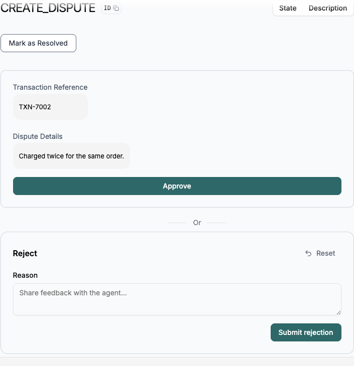
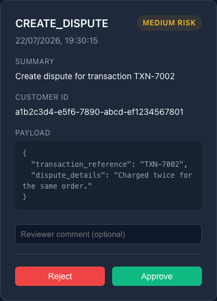
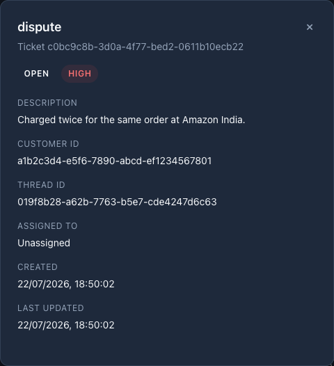

Banking support that always asks before it acts.
A multi-agent LangGraph system that routes, verifies, and executes banking requests, pausing for human and customer approval on anything sensitive.
Five services, one system.
Each part has one job. Together they route a conversation, hold it in state, and let a human step in before anything sensitive happens.
LangGraph Agent Server
Runs the multi-agent graph: routing, tool calls, and durable interrupts backed by Postgres checkpoints.
FastAPI Backend
Custom endpoints behind the Admin Dashboard: pending approvals, support tickets, and the audit trail.
Admin Dashboard
React portal where a reviewer approves sensitive actions and inspects support tickets.
Customer Chat UI
The customer-facing chat, including native consent cards for anything that needs sign-off.
PostgreSQL
Durable storage for conversation checkpoints, customer records, tickets, approvals, and audit events.
One request, many specialists.
The Supervisor reads the request and hands it to exactly one specialist. A sensitive action then clears two more gates before it ever executes.
Supervisor
Classifies the request and routes it to the right specialist, never directly to a gated node.
Authentication
Verifies the customer's identity in code, before any account, transaction, or card agent can run.
Account, Transaction, Card, and FAQ agents
Domain agents handle the actual request and can propose a sensitive action, never execute one.
Customer Consent Gate
Interrupts the conversation so the customer explicitly approves or rejects the proposed action.
Compliance
Scores the risk of the approved action and recommends approve, reject, or escalate to a human.
Human Approval Gate
Interrupts again for an admin reviewer in the dashboard, with the decision written to an audit log.
Action Executor
Only now does the action actually run: a dispute gets filed, or a card gets blocked or replaced.
Two approvals, one audit trail.
Every dispute, card block, or card replacement is a proposal, not an action. It only proceeds after clearing gates enforced deterministically in the graph, never left to a model's self-report of what it thinks is safe.
-
Auth gate enforced in codeRuns against the agent actually chosen, not the LLM's self-reported verification flag.
-
Customer consent requiredThe customer must explicitly approve before Compliance ever sees the proposed action.
-
Risk-scored by ComplianceAssesses the request and can escalate straight to a human agent instead of routing for approval.
-
Every decision is loggedApproved, rejected, or escalated: each outcome is written to an immutable audit event.
What it looks like.
Screenshots from the running system: the customer's consent prompt and the admin reviewer's queue.



Run it locally.
Docker Compose brings up Postgres, Redis, the LangGraph server, FastAPI, and both frontends together.
# clone and configure
git clone https://github.com/vins13pattar/banking-support-chatbot
cd banking-support-chatbot
cp .env.example .env # add OPENAI_API_KEY + LANGSMITH_API_KEY
# set up, seed, and start the full stack
make setup
make seed
make start